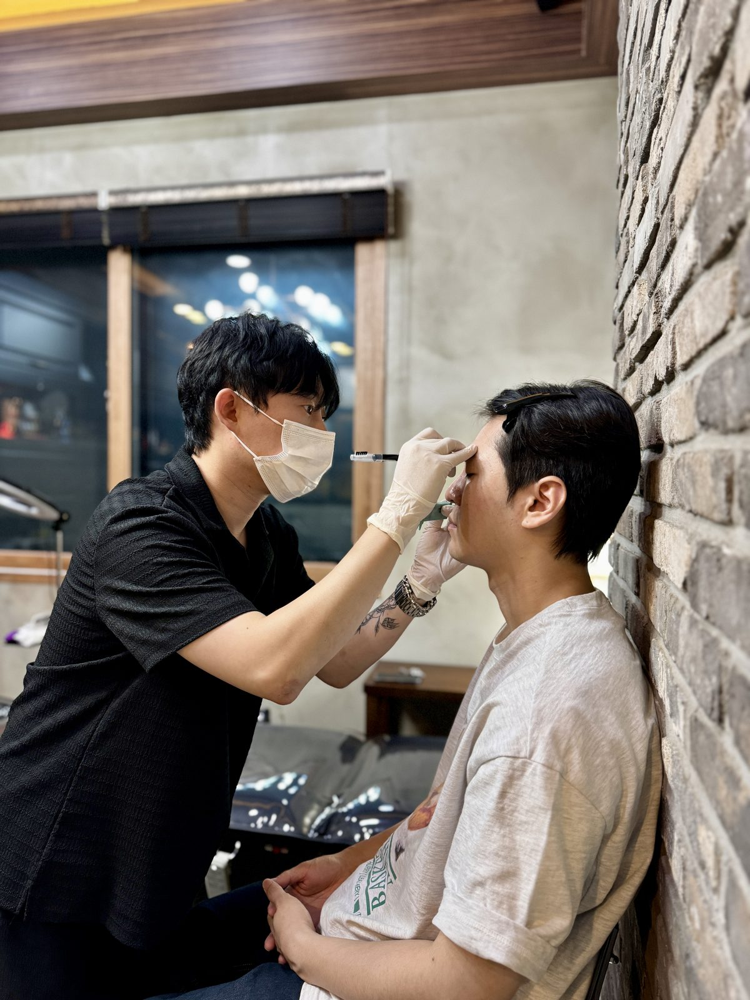
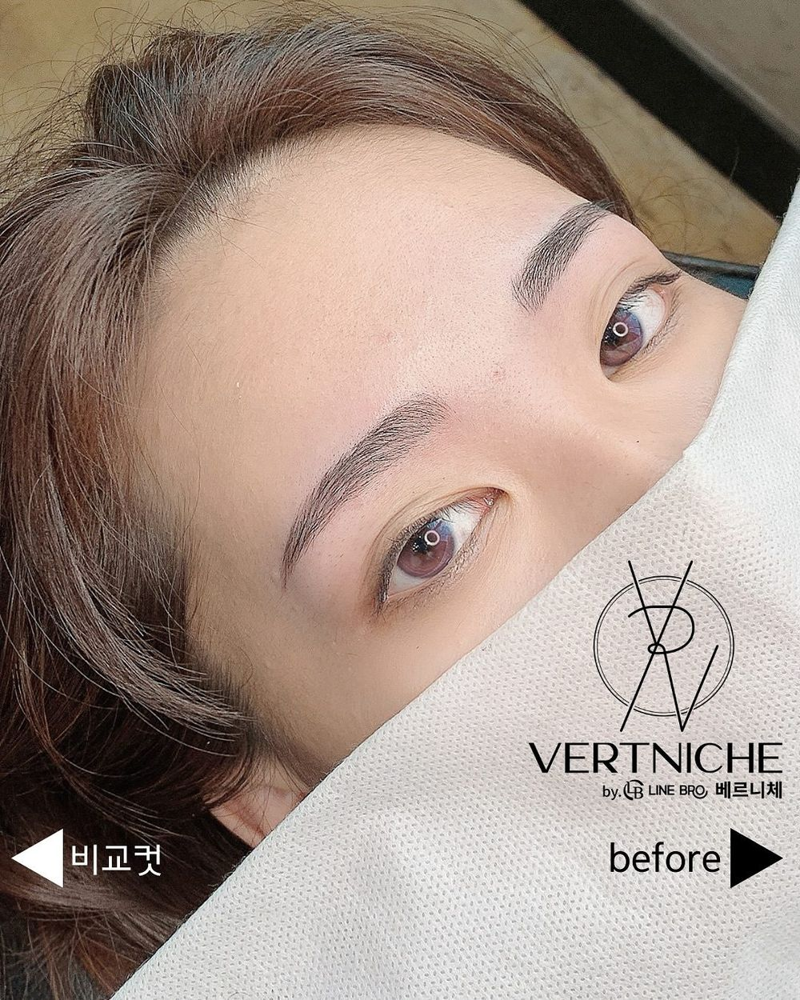
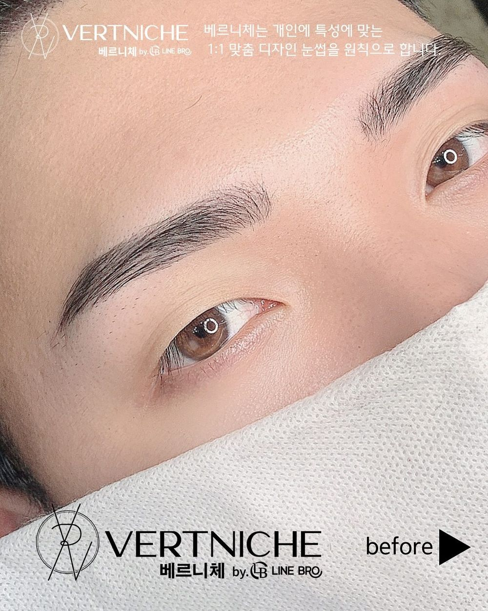
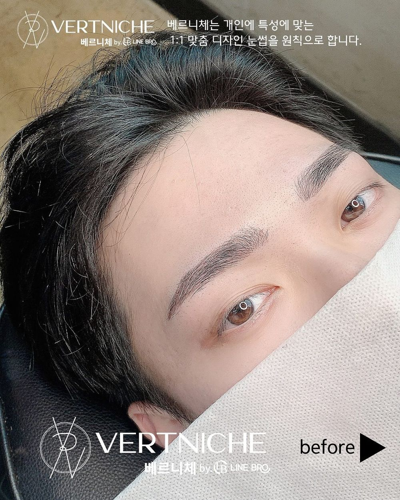
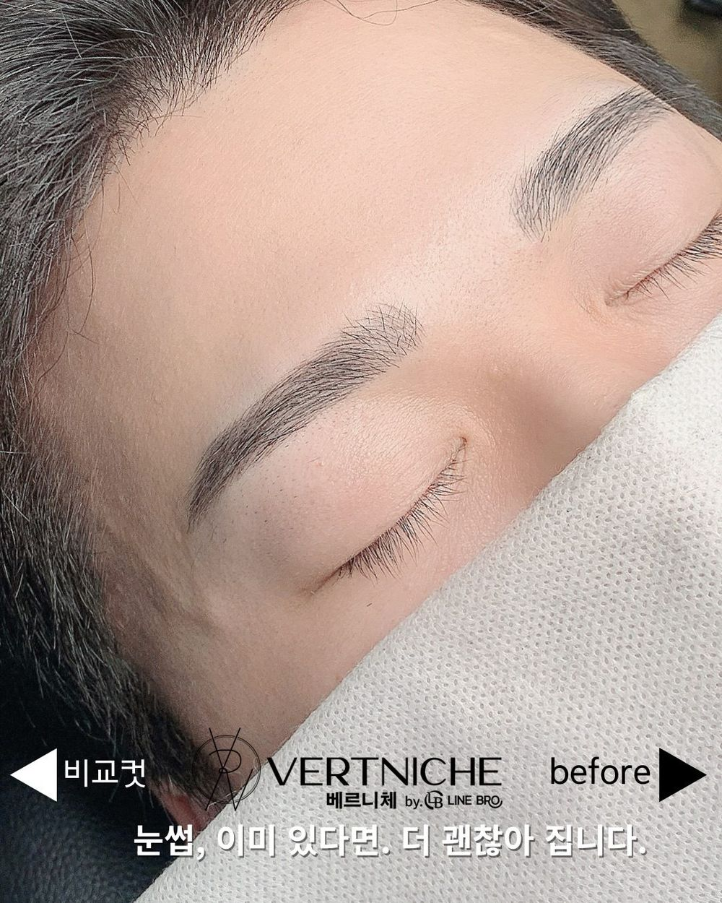

眉アートメイク · 韓国 大邱
骨格から読む、描いたように見えない眉。
大邱・東城路のベルニチェ（Vertniche）。院長が2018年から5,500人の眉を担当してきました。今ある眉の毛流れを活かすので、描いたようには見えません。





海外からお越しの方へ
1回で落ち着くようにデザインします
リタッチに戻ってこられない方が多いので、濃さと深さを調整して1回の施術で落ち着くようにし、色は一段明るめにデザインします。帰国の日程に合わせて、受けるタイミングも一緒に考えます。予約の前に、まず眉の写真を送ってください。
- 住所大邱 中区 東城路2キル 12-32 3階（3F, 12-32 Dongseongno 2-gil, Jung-gu, Daegu）
- 地下鉄半月堂（パヌォルダン）駅13番出口から徒歩5分（280m）。中央路駅から徒歩8分。
- 電話+82 507-1486-0194
営業時間
- 月〜土10:00–22:00
- 日16:00–22:00
ご来店までの流れ
写真を送る
すっぴんの眉の写真をInstagramのDMで送ってください。眉カットで十分か、アートメイクが必要かをお伝えします。
日程を決める
施術後2〜4日目は色が濃く見えます。大事な撮影や予定の4〜5日前までに受けるのがおすすめです。
施術は約60分
相談、顔に合わせたデザイン、鎮静クリーム、施術まで。すべて院長が担当します。
アフターケア
2週間は眉に水と汗を当てないでください。仕上がりは28日目です。
FAQ
海外の方からよくある質問
日本語は通じますか？
相談は韓国語と簡単な英語で行います。日本語でDMを送っていただければ、翻訳して確認しお返事します。まずは眉の写真を送ってください。
リタッチに来られません。1回で大丈夫ですか？
はい。海外にお住まいの方には、1回で落ち着くよう濃さと深さを調整し、色を一段明るめにデザインします。
時間はどのくらい？痛みはありますか？
相談とデザインを含めて約60分です。始める前に鎮静クリームを30分のせます。ほとんどの方が、チクッとする程度とおっしゃいます。
どのくらい持ちますか？
通常1年〜1年半で、少しずつ薄くなっていきます。
旅行中のケアは？
2週間は眉に水と汗を当てず、かさぶたは自然に取れるまで触らないでください。2〜4日目は濃く、8〜14日目は薄く見えますが正常です。仕上がりは28日目です。
料金は？
定額制で、リタッチ1回が含まれます。現在の料金はInstagramのDMでお問い合わせください。
行き方は？
大邱 中区 東城路2キル 12-32 3階。地下鉄 半月堂駅13番出口から徒歩5分です。建物に駐車場はなく、近くの有料駐車場をご利用ください。